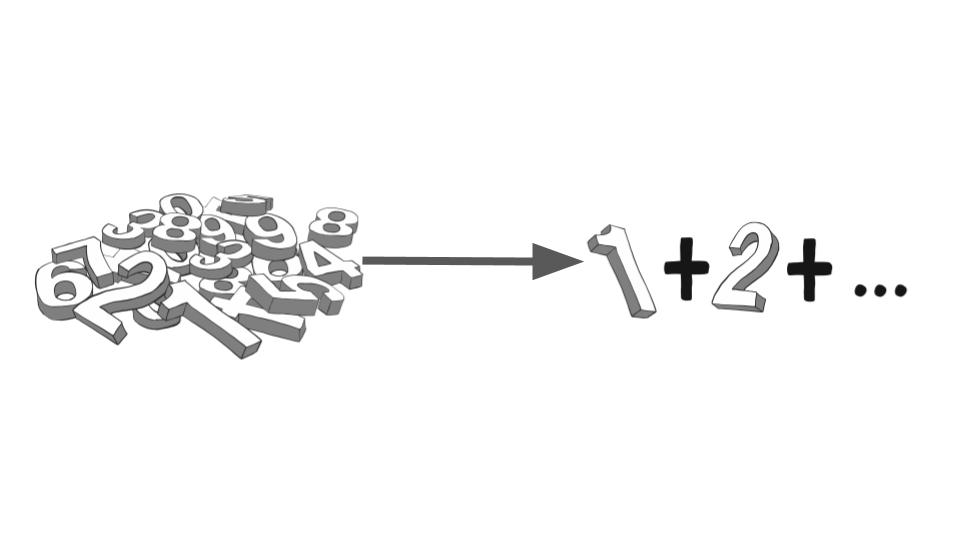
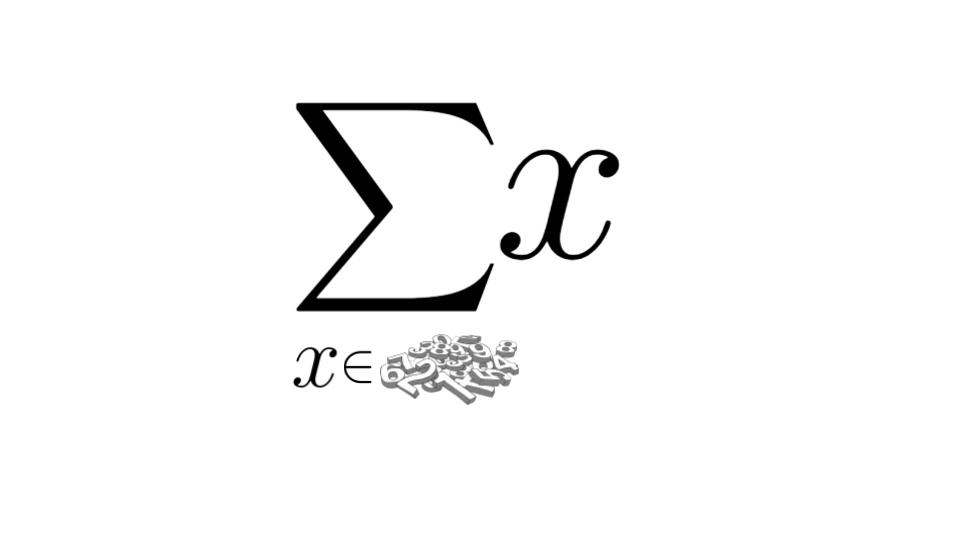

Summation Notation
When summarizing a data set (either from a population or a sample) we will often need to add (i.e. sum) all of these number up. To make an easier way to express the process of adding a bunch of number in a pile we use the summation notation, which we use the capital Greek letter sigma: \(\sum\)

The notation we will use for this is:

This notation means that we sum \(x\) for every \(x\) in ("\(\in\)") our pile.
In statistics we will not be summing random piles but instead we will be summing data taken from subjects of either a population or a sample. So to denote this we will always number of our subjects and for each \(i^{\text{th}}\) subject we will denote their data as \(x_i\). That is if we have \(n\) subjects in our sample we list their data as: \(\{x_1,x_2,..., x_n\}\), to sum this we will use the notation:
\[\sum_{i=1}^nx_i\]
The notation means we sum \(\sum\) for \(i=1\) up to \(i=n\) the values \(x_i\).
Note that the \(x_i\) is just a notation to mean that we have a data value numbered by \(i\).